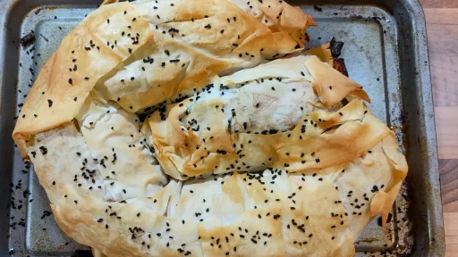
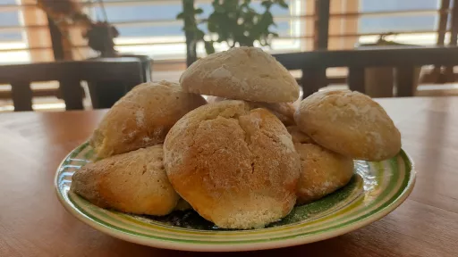

Categories
Beef
Chicken
Dessert
Lamb
Pork
Seafood
Turkey
Veggie
Cuisines
American (14)
Asian (14)
British (22)
Cajun (5)
Caribbean (17)
Creole (3)
French (5)
Greek (2)
Hawaiian (1)
Hungarian (2)
Indian (24)
Iranian (4)
Italian (37)
Japanese (1)
Mediterranean (6)
Mexican (14)
Middle Eastern (9)
Moroccan (17)
North African (1)
Portuguese (1)
Russian (1)
Spanish (11)
Thai (10)
Turkish (2)
Diet
Vegan
Gluten free
Dairy free
Nut free
Recipe search and dropdown menu selection are unavailable whilst javascript is disabled.
Recent recipes
All-in one sausage and crispy potato bake
1 hr
Serves 4
Nutrition ✓
Melting meatball macaroni
50 mins
Serves 6
Nutrition ✓
Cheat's macaroni cheese with ham, peas and stilton
25 mins
Serves 4
Nutrition ✓
Italian
Grilled harissa sardines with fennel & potato salad
50 mins
Serves 6
Nutrition ✓

Sweet potato pastilla
1 hr 5 mins
Serves 6
Nutrition ✓
Middle Eastern
Moroccan
Sweet potato cakes with poached eggs
30 mins
Serves 4
Nutrition ✓
Tuscan chicken pasta
25 mins
Serves 4
Nutrition ✓
Italian

Soft lemon cookies
1 hr 23 mins
Serves 10